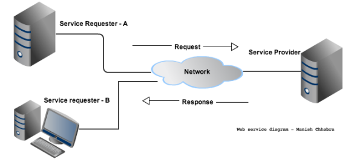
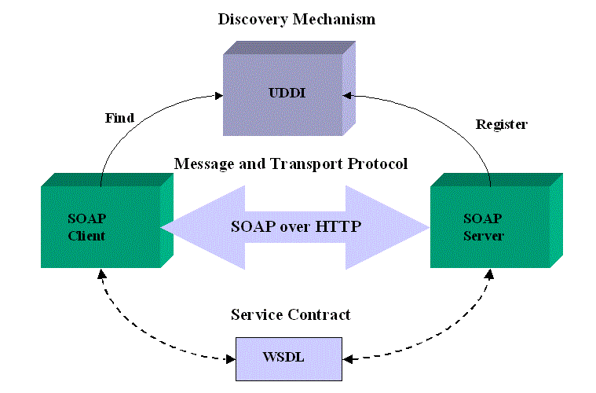

XML and Web Service
@tenosiswono
EXtensible Markup Language
What is XML ?
- Specification for creating custom markup languages.
- W3C Recomendation.
- Primary purpose is to help computers to share data.
- Meta-Language, for creating other languages.
XML Document
- Every XML is Text-Based.
- Sharing Data.
- Platform Independence.
Generic XML Example
<?xml version="1.0" encoding="ISO-8859-1" ?>
<presentation>
<slide number="1">
<name>XML : Introduction</name>
<contents>XML is...</contents>
</slide>
</presentation>
WEB Service
What's a WEB Service ?
- Just a web page meant for a computer to request and process.
- Meant to be consumed by other program or applicaions.
- Even more percisely the name it self indicate that its a service which available over the web.
Architecture
Benefits
- Simple - Supported on many platforms.
- Stateless - a request is made, then result is returned and connection closes, no permanet connection.
- Firewall Friendly - uses HTTP, not usually blocked.
- Loosely Coupled - The interface can be extended.
Types of Web Service
- SOAP (simple object acess protocol)
- WDSL (Web Service Description Language) - XML based document defines the service interface, protocol bindings, and service endpoint addresses
- UDDI (Universal Description, Discovery and Integration) - Repository/database of service
- REST (Representational state transfer)
SOAP Architecture
Q&A